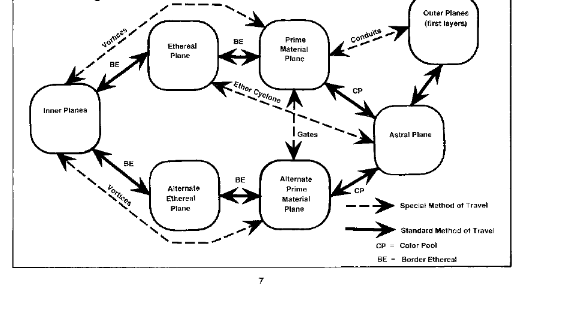

遭遇 · Encounters
每个位面的介绍都会给出常见到极罕见的遭遇类别和示例遭遇表。地下城主可以使用 2d20、d20 与 d12 等骰子生成随机遭遇，也可以根据自己的战役需要编写新的表。

这张图中的缩写为：CP，颜色池 Color Pool；BE，以太边界 Border Ethereal。虚线表示特殊旅行方式，实线表示标准旅行方式。图示保留原书关系；实际战役中，地下城主可以为尚未列出的通道、门和颜色池补充规则。
每个位面的介绍都会给出常见到极罕见的遭遇类别和示例遭遇表。地下城主可以使用 2d20、d20 与 d12 等骰子生成随机遭遇，也可以根据自己的战役需要编写新的表。

这张图中的缩写为：CP，颜色池 Color Pool；BE，以太边界 Border Ethereal。虚线表示特殊旅行方式，实线表示标准旅行方式。图示保留原书关系；实际战役中，地下城主可以为尚未列出的通道、门和颜色池补充规则。